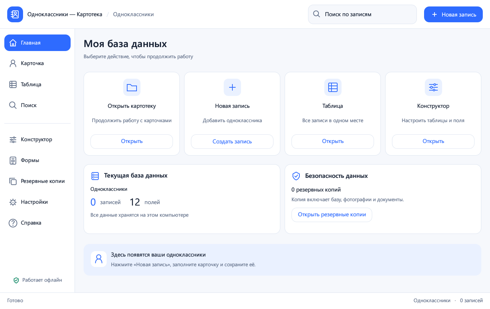

Карточка записи и общая таблица с изменяемой шириной столбцов.
WINDOWS · RU / DE / EN · 0.5.0
Личная картотека для Windows
Храните карточки одноклассников и другие списки на своём компьютере. Таблицы, собственные поля, фотографии, документы, поиск и резервные копии — в одном приложении.
Локальные данные. Без аккаунта. Без обязательного интернета.

Что умеет программа
Собственные таблицы и 11 типов полей: текст, числа, дата, время, дата и время, флажок, URL, фото и документ.
Фотографии с предпросмотром, управляемые локальные копии документов и ссылки на сайты.
Поиск по всей выбранной таблице, фильтр загруженных строк и экспорт CSV.
Резервное копирование базы вместе с вложениями и восстановление с защитным снимком.
Светлая тема, масштаб 80–150%, сворачиваемое меню и русский, немецкий, английский интерфейс.
Установка и запуск
Запустите Kartoteka-0.5.0-Setup.exe и оставьте предложенную папку текущего пользователя. Права администратора и Rust не требуются. Перед обновлением сохраните изменения и закройте старое окно. Для запуска без установки распакуйте весь переносной ZIP: EXE и три DLL должны находиться рядом.
Требования и ограничения
Проверено на Windows 11 x 64. EXE не подписан. Таблица показывает до 2000 строк, поиск — до 500 результатов. Свободное перетягивание полей формы и импорт Microsoft Access не реализованы. Системный DPI 125/150% и два монитора отдельно не проверены; качество сглаживания зависит от рендера egui. Программа не отправляет телеметрию; основные функции работают офлайн.